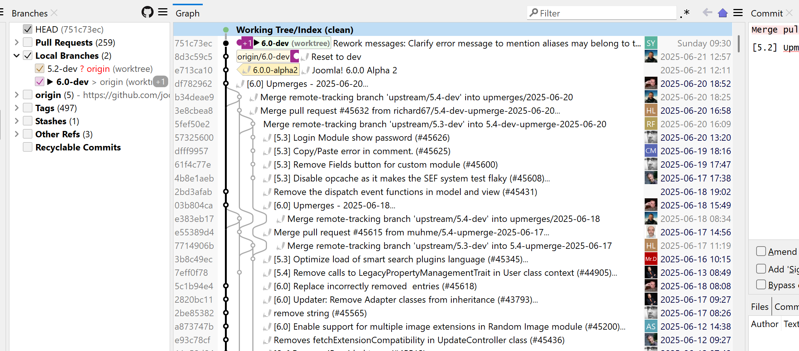

Where It Excels
Strong repository insights, visual history analysis, and broad platform support for enterprise teams.
Developer Tool Deep Dive
SmartGit is a cross-platform Git client built for professional teams that need visual Git control, repository diagnostics, and flexible licensing options.
Strong repository insights, visual history analysis, and broad platform support for enterprise teams.
Commercial pricing has multiple options and may require procurement alignment before standard rollout.
Supports trunk-based and GitHub Flow well when merge policy is enforced in the host platform.
Good local fit with FlexDeploy build-once promotion pipelines and audited rollback deployment controls.

Organizations use one Git client across Windows, macOS, and Linux to reduce training and support variance.
Developers curate commits and branch state before PR creation in protected repository models.
Teams inspect commit impact and prepare rollback-history branches while deployment rollback runs in FlexDeploy.